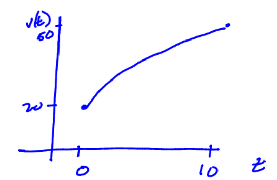
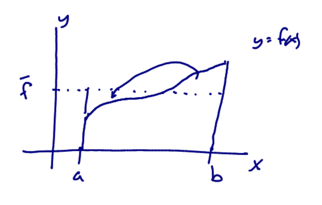

Consider three questions:
Question: If I know how fast I am driving, what distance have I travelled?
Question: What is the probability an electron with a certain amount of energy is actually inside the nucleus of an atom?
Question: Given a shape of a barrel, how much wine is inside of it? (Kepler ~1610)
What do these questions all have in common? All amount to finding the area under a curve.
Consider driving a car a constant 60mph for 3 hours. How far do you drive?
Draw a figure that shows this calculation as an area problem.
A car is moving with velocity, \(v(t)\), shown below. We know \(v(0) = 20\) m/sec, \(v(10) = 50\) m/sec, and \(20 \leq v(t) \leq 50\).
What can we say about the distance travelled?

What if we had more data?
| t | 0 | 2 | 4 | 6 | 8 | 10 |
|---|---|---|---|---|---|---|
| v(t) | 20 | 30 | 38 | 44 | 48 | 50 |
Use this data to find a new lower and new upper estimate for the distance travelled.
What if we had more values? Could we do better?
If \(f(x)\) is a function defined on an interval \([a,b]\) the definite integral of \(f\) from \(a\) to \(b\)
is given by
\(\displaystyle \int_a^b f(x)~dx = \lim_{n \to \infty} \sum_{i=1}^n f(x_i^*)\Delta x_i \),
provided the limit exists. If this limit exists, the function \(f(x)\) is said to be integrable on \([a,b]\) or is an integrable
function.
\(\displaystyle \int_a^b f(x)~dx \equiv\) "integral of \(f\) from \(a\) to \(b\)." It denotes the signed area of region bounded by \(x=a, x=b, y=0,\) and \(y=f(x)\).
Rmk: signed area is not regular area. Area below x-axis counts as negative area.
Draw pictures and evaluate the following definite integrals:
Let \(f\) and \(g\) be continuous functions on \([a,b]\) and let \(k\) be a constant. Then we have the following properties of definite integrals.
Draw pictures that explain each of the properties above.
Draw pictures and evaluate the following definite integrals:
Do you notice any patterns?
Consider \(\displaystyle \int_{a}^b f(x)~dx =\) some area.

Definition The average value of \(f\) over \([a,b]\) is \(\displaystyle \bar{f} = \frac{1}{b-a} \int_a^b f(x)~dx\).
Explain this definition.
What is the average value of \(\cos(x)\) over \([-\pi/2,\pi/2]\)?